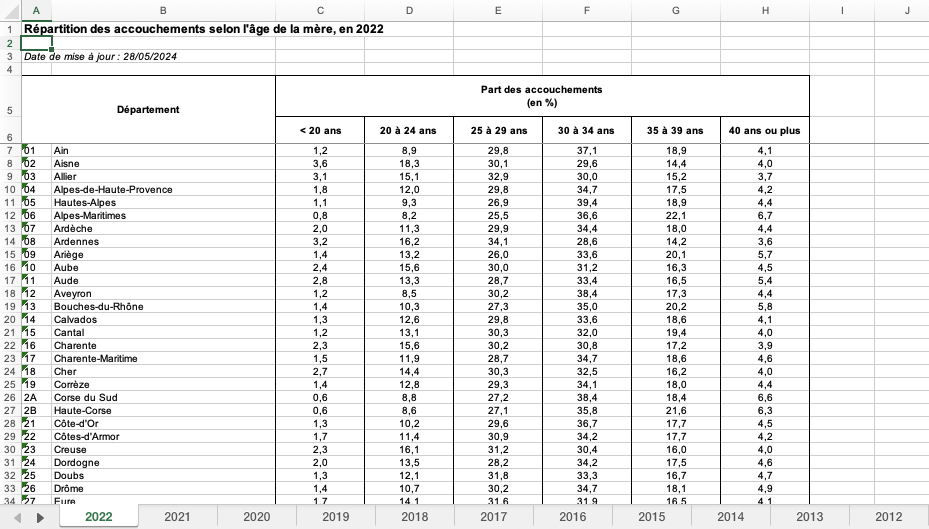
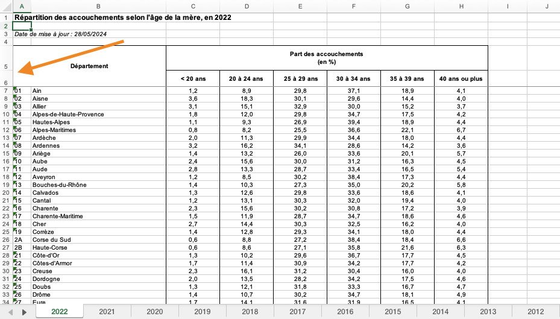
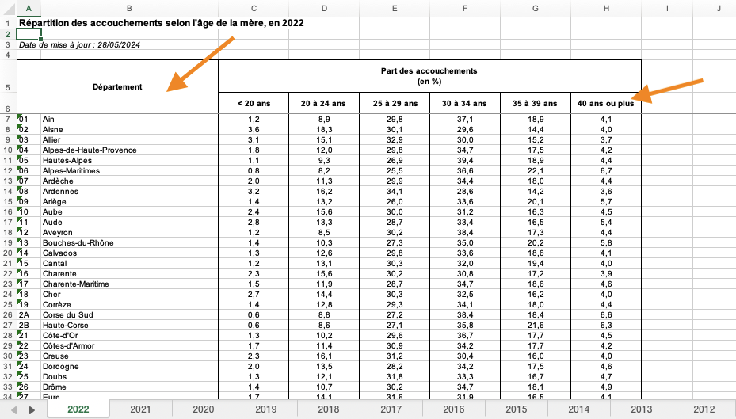
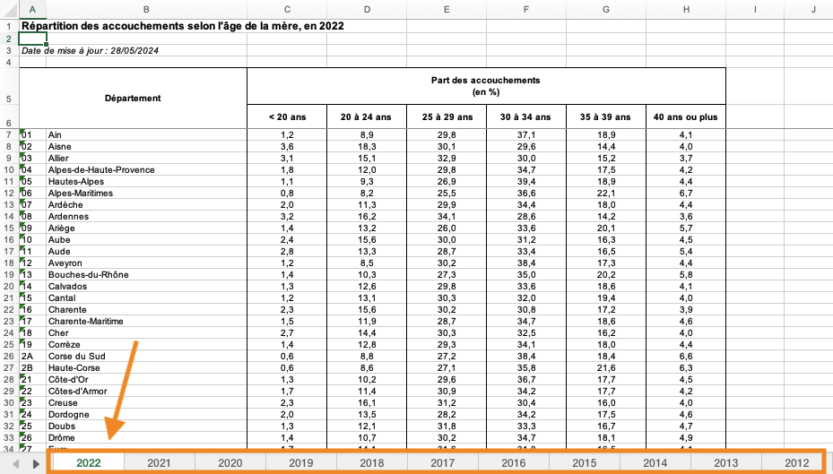
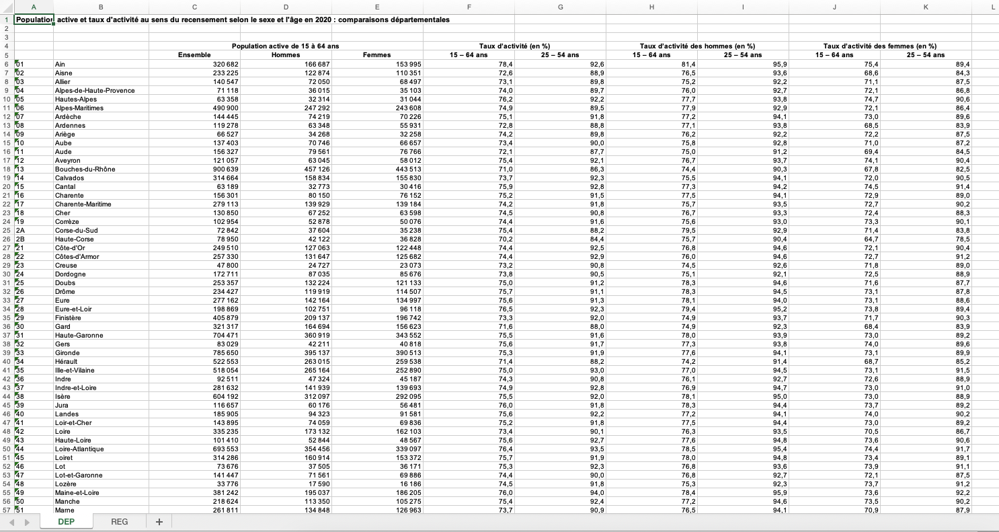
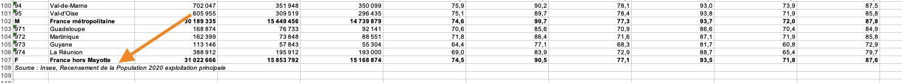
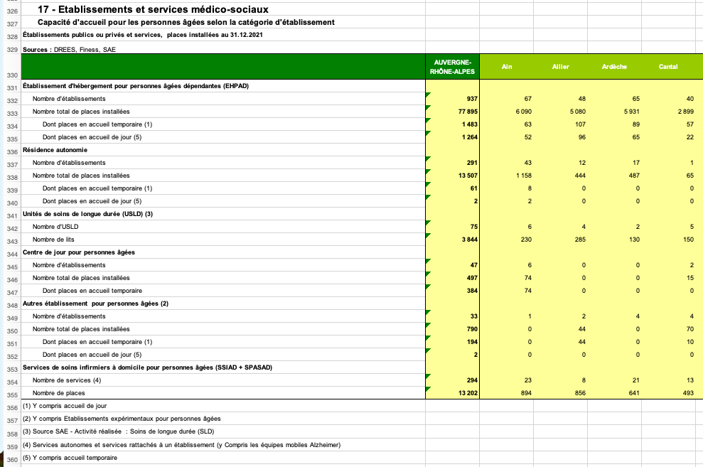

Un petit coup de polish Nettoyage de fichiers Excel avec R
Rencontres R 2024
QR code vers repo
plutôt dans le README
Qui suis-je ?
- Rapports statistiques
- Chaîne de production
- Politiques sociales et de l’emploi
Cas réels, dans le cadre de production d’indicateurs pour un service statistique ministériel
Que demande le peuple ?

De l’autre côté du miroir
De l’autre côté du miroir
Une grande créativité dans les mises en forme des données !
Captures d’écrans qui se superpose de fichiers Excel en bordel avec smileys de réactions
Nos outils
tidyverse pour le général
readxl –> lecture d’un seul onglet, plutôt pour les cas simples, gère les range, geometry rectangulaire
tidyxl –> gère tout, mais degré d’abstraction supplémentaire, mais logique plus manipulation de données, et moins import
unpivotr –> prend en entrée un fichier ouvert avec tidyxl
et bien d’autres ( openxlsx2 )
Notamment pour écrire des données, mais cela ne sera pas traité ici (openxlsx2)
On va illustrer les différentes façon
C24 (mea culpa)
Drees - contient la répartition par âge de la mère des naissances
C24 (mea culpa)
Range décalé
C24 (mea culpa)
Ligne de header doublonné
C24 (mea culpa)
Un onglet par année (mais tous pareil) + un onglet de documentation
C24 (mea culpa)
Des données en bas que l’on ne souhaite pas
une proposition avec readxl
reprendre la fonction et ses arguments un par un
faire avec code + résultat an face à face avec highlight
sheet nommé ou en position range ou skip, ici on fait un skip et on gérera derrière, mais un range peut permettre de sortir direct les lignes du bas. Aussi n_max
on peut aussi spécifier à la main un vecteur de noms, ou skip des colonnes avec col_types
une proposition avec readxl
AStuce quand les headers sont inversés (exemple PA08) -> https://readxl.tidyverse.org/articles/multiple-header-rows.html (ou avec slice)
Puis on fait une fonction sur les onglets On peut aussi gérer dans une custom fonction si on a du wrangling à faire avant Des fois il faut aussi passer un as.character sur l’ensemble avant le pivot puis gérer les cas
df_c24_full <- excel_sheets(path_c24) |>
set_names() |>
# remove documentation sheet
_[-12] |>
map(read_xlsx,
path = path_c24,
skip = 5,
.name_repair = "unique_quiet") |>
list_rbind(names_to = "annee") |>
rename(code_dep = ...1,
lib_dep = ...2) |>
pivot_longer(-c(annee, code_dep, lib_dep),
names_to = "age_mere",
values_to = "perc_naiss") |>
mutate( annee = as.numeric(annee)) |>
filter(!is.na(code_dep) & !is.na(perc_naiss) & !code_dep %in% c("F", "M"))
df_c24_full# A tibble: 6,732 × 5
annee code_dep lib_dep age_mere perc_naiss
<dbl> <chr> <chr> <chr> <dbl>
1 2022 01 Ain < 20 ans 1.2
2 2022 01 Ain 20 à 24 ans 8.9
3 2022 01 Ain 25 à 29 ans 29.8
4 2022 01 Ain 30 à 34 ans 37.1
5 2022 01 Ain 35 à 39 ans 18.9
6 2022 01 Ain 40 ans ou plus 4.1
7 2022 02 Aisne < 20 ans 3.6
8 2022 02 Aisne 20 à 24 ans 18.3
9 2022 02 Aisne 25 à 29 ans 30.1
10 2022 02 Aisne 30 à 34 ans 29.6
# ℹ 6,722 more rowsavec tidyxl + unpivotr
# A tibble: 10,237 × 24
sheet address row col is_blank content data_type error logical numeric
<chr> <chr> <int> <int> <lgl> <chr> <chr> <chr> <lgl> <dbl>
1 2022 A1 1 1 FALSE 256 character <NA> NA NA
2 2022 B1 1 2 TRUE <NA> blank <NA> NA NA
3 2022 C1 1 3 TRUE <NA> blank <NA> NA NA
4 2022 D1 1 4 TRUE <NA> blank <NA> NA NA
5 2022 E1 1 5 TRUE <NA> blank <NA> NA NA
6 2022 F1 1 6 TRUE <NA> blank <NA> NA NA
7 2022 G1 1 7 TRUE <NA> blank <NA> NA NA
8 2022 H1 1 8 TRUE <NA> blank <NA> NA NA
9 2022 F2 2 6 TRUE <NA> blank <NA> NA NA
10 2022 G2 2 7 TRUE <NA> blank <NA> NA NA
# ℹ 10,227 more rows
# ℹ 14 more variables: date <dttm>, character <chr>,
# character_formatted <list>, formula <chr>, is_array <lgl>,
# formula_ref <chr>, formula_group <int>, comment <chr>, height <dbl>,
# width <dbl>, row_outline_level <dbl>, col_outline_level <dbl>,
# style_format <chr>, local_format_id <int>avec tidyxl + dplyr/tidyr
Soit on peut gérer à la main, en considérant que le contenu est numerique et le reste du character, on va fill puis pivot puis gérer sur les colonnes
Un peu artisanal mais ça passe
df_c24_cells_full <- df_cells_c24 |>
filter(sheet != "Documentation") |>
filter(row >= 4 & !is_blank & col != 2) |>
select(sheet, row, col, character, numeric) |>
# on construit lignes et colonnes
mutate(header_row = case_when(row == 6 ~ character),
code_dep = case_when(col == 1 ~ coalesce(as.character(numeric), character))) |>
# fill des colonnes
group_by(col) |>
fill(header_row, .direction = "down") |>
# fill des codes dep
group_by(row) |>
fill(code_dep, .direction = "down") |>
ungroup() |>
# on filtre
filter(!is.na(numeric) &
!is.na(code_dep) &
!is.na(header_row) & !code_dep %in% c("F", "M")) |>
mutate(sheet = as.numeric(sheet),
header_row = str_trim(header_row)) |>
select(annee = sheet,
code_dep,
age_mere = header_row,
perc_naiss = numeric)avec tidyxl + unpivotr
penser à grouper par onglet
-> fonctions très puissantes mais pas toujours faciles à manipuler
up-left car une cellule fusionnée ne remplit en fait que la première valeur en haut à gauche -> exemple capture d’écran
df_cells_c24 |>
filter(row >= 5) |>
group_by(sheet) |>
behead("up-left", "typ_var") |>
behead("up", "mod_var") |>
behead("left", "code_dep") |>
behead("left", "lib_dep") |>
ungroup() |>
mutate(mod_var = str_trim(mod_var)) |>
select(sheet, typ_var, mod_var, code_dep, lib_dep, numeric) |>
filter(!is.na(code_dep) &
!code_dep %in% c("F", "M") &
!is.na(numeric)) # A tibble: 6,732 × 6
sheet typ_var mod_var code_dep lib_dep numeric
<chr> <chr> <chr> <chr> <chr> <dbl>
1 2012 "Part des accouchements\n(en %)" < 20 ans 01 Ain 1.5
2 2012 "Part des accouchements\n(en %)" 20 à 24 ans 01 Ain 13.8
3 2012 "Part des accouchements\n(en %)" 25 à 29 ans 01 Ain 34.9
4 2012 "Part des accouchements\n(en %)" 30 à 34 ans 01 Ain 32.7
5 2012 "Part des accouchements\n(en %)" 35 à 39 ans 01 Ain 13.8
6 2012 "Part des accouchements\n(en %)" 40 ans ou pl… 01 Ain 3.3
7 2012 "Part des accouchements\n(en %)" < 20 ans 02 Aisne 4.6
8 2012 "Part des accouchements\n(en %)" 20 à 24 ans 02 Aisne 20.7
9 2012 "Part des accouchements\n(en %)" 25 à 29 ans 02 Aisne 33.8
10 2012 "Part des accouchements\n(en %)" 30 à 34 ans 02 Aisne 25.9
# ℹ 6,722 more rowsFaire des schéma étapes par étape
Résultat
Lien demo-isd + iframe, ou capture d’écran et lien
https://github.com/kantiles/demo_isd
Quelques astuces
- on peut paramétriser le nombre de lignes à sauter par onglet (dans le filter), car cela arrive que les espacements ne soient pas les mêmes d’une année sur l’autre
- penser à utiliser les fonctions de
dplyrettidyrcommefilloucoalesceen complément - séparer par bloc + faire des
str_detect
exemple pour récupérer les dates de MAJ de chaque onglet
df_cells_c24 |>
select(sheet, character) |>
filter(str_detect(character, "mise à jour")) |>
mutate(
date_maj = str_remove(character, "Date de mise à jour : "),
date_maj = dmy(date_maj)
)# A tibble: 11 × 3
sheet character date_maj
<chr> <chr> <date>
1 2022 Date de mise à jour : 28/05/2024 2024-05-28
2 2021 Date de mise à jour : 28/05/2024 2024-05-28
3 2020 Date de mise à jour : 28/05/2024 2024-05-28
4 2019 Date de mise à jour : 15/11/2021 2021-11-15
5 2018 Date de mise à jour : 17/11/2020 2020-11-17
6 2017 Date de mise à jour : 15/11/2019 2019-11-15
7 2016 Date de mise à jour : 29/03/2019 2019-03-29
8 2015 Date de mise à jour : 29/03/2019 2019-03-29
9 2014 Date de mise à jour : 29/03/2019 2019-03-29
10 2013 Date de mise à jour : 29/03/2019 2019-03-29
11 2012 Date de mise à jour : 29/03/2019 2019-03-29Classique, fichier Insee
Aucune difficulté –> inverser avec l’exemple d’avant ?
Population active et taux d’activité au sens du recensement selon le sexe et l’âge en 2020 : comparaisons départementales
Classique, fichier Insee
Insee tidyxl + unpivotr
xlsx_cells("data/TCRD_015.xlsx") |>
filter(sheet == "DEP" & row >= 3) |>
behead("up-left", "typ_var") |>
behead("up", "mod_var") |>
behead("left", "code_dep") |>
behead("left", "lib_dep") |>
select(typ_var, mod_var, code_dep, lib_dep, numeric)# A tibble: 918 × 5
typ_var mod_var code_dep lib_dep numeric
<chr> <chr> <chr> <chr> <dbl>
1 Population active de 15 à 64 ans Ensemble 01 Ain 320682
2 Population active de 15 à 64 ans Hommes 01 Ain 166687
3 Population active de 15 à 64 ans Femmes 01 Ain 153995
4 Population active de 15 à 64 ans Ensemble 02 Aisne 233225
5 Population active de 15 à 64 ans Hommes 02 Aisne 122874
6 Population active de 15 à 64 ans Femmes 02 Aisne 110351
7 Population active de 15 à 64 ans Ensemble 03 Allier 140547
8 Population active de 15 à 64 ans Hommes 03 Allier 72050
9 Population active de 15 à 64 ans Femmes 03 Allier 68497
10 Population active de 15 à 64 ans Ensemble 04 Alpes-de-Haute-Pr… 71118
# ℹ 908 more rowsAutres options
- readxl en deux fois
- ou en nommant les colonnes et en faisant un range ou un skip = 5, plus artisanal mais aussi plus facile si on est moins à l’aise
le montrer
FAJ - Dernier exemple sur le sujet
Cela fonctionne dans la plupart des cas assez bien, même avec des cellules fusionnées et d’autres non
petite subtilité car tous les onglets ne commencent pas au même endroit et ne terminent pas au même endroit
df_cells_faj <- xlsx_cells("data/FAJ Données annuelles 2007-2022.xlsx") |>
# on filtre sur les onglets qui nous intéressent - on retire FAJ2015 qui a une structuration différente et qu'il faudrait traiter à part
filter(str_sub(sheet, 1, 6) == "FAJ 20" & sheet != "FAJ 2015")
# ligne de début
df_cells_faj_min <- df_cells_faj |>
filter(character == "Départements") |>
select(sheet, row_min = row)
# ligne de fin - on aurait aussi pu détecter La Réunion
df_cells_faj_max <- df_cells_faj |>
filter(is_blank & col == 1) |>
inner_join(df_cells_faj_min, by = join_by(sheet)) |>
# on ajoute quelques lignes
filter(row > row_min + 3) |>
group_by(sheet) |>
filter(row == min(row)) |>
ungroup() |>
select(sheet, row_max = row) |>
# comme on a detecté la ligne blanche suivant la fin, on décale
mutate(row_max = row_max - 1)
# on jointe pour cibler les tableaux
df_cells_faj |>
inner_join(df_cells_faj_min, by = join_by(sheet)) |>
inner_join(df_cells_faj_max, by = join_by(sheet)) |>
filter(between(row, row_min, row_max)) |>
group_by(sheet) |>
behead("up-left", "typ_var") |>
behead("up", "mod_var") |>
behead("left", "code_dep") |>
behead("left", "lib_dep") |>
ungroup() |>
select(sheet, typ_var, mod_var, code_dep, lib_dep, character, numeric)# A tibble: 13,542 × 7
sheet typ_var mod_var code_dep lib_dep character numeric
<chr> <chr> <chr> <chr> <chr> <chr> <dbl>
1 FAJ 2007 Montants engagés pour le… <NA> <NA> <NA> <NA> NA
2 FAJ 2007 Montants engagés pour le… <NA> 01 Ain <NA> 162614
3 FAJ 2007 Montants engagés pour le… <NA> 02 Aisne <NA> 272858
4 FAJ 2007 Montants engagés pour le… <NA> 03 Allier <NA> 93077
5 FAJ 2007 Montants engagés pour le… <NA> 04 Alpes-… <NA> 27873
6 FAJ 2007 Montants engagés pour le… <NA> 05 Hautes… <NA> 36875.
7 FAJ 2007 Montants engagés pour le… <NA> 06 Alpes … <NA> 280812.
8 FAJ 2007 Montants engagés pour le… <NA> 07 Ardèche <NA> 170098
9 FAJ 2007 Montants engagés pour le… <NA> 08 Ardenn… <NA> 88808
10 FAJ 2007 Montants engagés pour le… <NA> 09 Ariège <NA> 80606
# ℹ 13,532 more rowsEn v2 FAJ - partitions
Tab 2022 avec deux tabs dans le même –> séparation des tabs plutôt que de ne faire que le premier
on va partitionner les cellules en tableaux, comme un nest, puis on va pouvoir soit travailler indépendemment, soit avec un map si la structure est similaire travailler le sujet
pour cela, il va falloir délimiter, ici on va le faire par les en-têtes, mais cela peut aussi se faire avec une détection des blancs (mais plus complexe avec les cellules fusionnées)
df_cells_faj_filtered <- df_cells_faj |>
filter(sheet == "FAJ 2022" & row >= 9)
df_title_cells_faj <- df_cells_faj_filtered |>
filter(character %in% c("Départements", "Métropoles et départements hors métropoles"))
# on partitionne
partitions_faj <- partition(df_cells_faj_filtered,
df_title_cells_faj)
# on reprendre le code du dessus
# et on assemble
map(
partitions_faj$cells,
\(data) data |>
behead("up-left", "typ_var") |>
behead("up", "mod_var") |>
behead("left", "code_dep") |>
behead("left", "lib_dep") |>
select(typ_var, mod_var, code_dep, lib_dep, character, numeric)
) |>
set_names("dep", "metro") |>
list_rbind(names_to = "type_geo")# A tibble: 2,642 × 7
type_geo typ_var mod_var code_dep lib_dep character numeric
<chr> <chr> <chr> <chr> <chr> <chr> <dbl>
1 dep "Montant total consommé … <NA> 01 Ain <NA> 233080
2 dep "Montant total consommé … <NA> 02 Aisne <NA> 86041
3 dep "Montant total consommé … <NA> 03 Allier <NA> 137826
4 dep "Montant total consommé … <NA> 04 Alpes-… <NA> 127581
5 dep "Montant total consommé … <NA> 05 Hautes… <NA> 72966
6 dep "Montant total consommé … <NA> 06 Alpes-… <NA> 553836
7 dep "Montant total consommé … <NA> 07 Ardèche <NA> 124944
8 dep "Montant total consommé … <NA> 08 Ardenn… <NA> 43854
9 dep "Montant total consommé … <NA> 09 Ariège <NA> 65064
10 dep "Montant total consommé … <NA> 10 Aube <NA> 248082
# ℹ 2,632 more rowsPanorama statistique
démo pour le format sous une autre forme que le texte (gras, couleur)
On va s’attacher à un seul tableau
Panorama statistique
path_panorama <- "data/PanoFrance2022.xlsx"
# chargement des cellules + délimitation
df_cells_panorama <- xlsx_cells(path_panorama) |>
filter(between(row, 330, 355))
# et du format - liste
format_panorama <- xlsx_formats(path_panorama)
df_panorama_cleaned <- df_cells_panorama |>
# il faudra gérer la fusion des codes géographiques à part
behead("up", "code_geo") |>
# type d'établissement en gras - penser à indexer sur le type d'établissement
behead_if(format_panorama$local$font$bold[local_format_id],
direction = "left-up",
name = "type_etab") |>
behead_if(
format_panorama$local$alignment$indent[local_format_id] == 2,
direction = "left-up",
name = "type_var"
) |>
behead_if(
format_panorama$local$alignment$indent[local_format_id] == 4,
direction = "left",
name = "type_places"
) |>
select(code_geo, type_etab, type_var, type_places, numeric, character) |>
filter(!is.na(numeric))
df_panorama_cleaned# A tibble: 2,243 × 6
code_geo type_etab type_var type_places numeric character
<chr> <chr> <chr> <chr> <dbl> <chr>
1 "AUVERGNE-\r\nRHÔNE-ALPES" Établissem… Nombre … <NA> 937 <NA>
2 "Ain" Établissem… Nombre … <NA> 67 <NA>
3 "Allier" Établissem… Nombre … <NA> 48 <NA>
4 "Ardèche" Établissem… Nombre … <NA> 65 <NA>
5 "Cantal" Établissem… Nombre … <NA> 40 <NA>
6 "Drôme" Établissem… Nombre … <NA> 68 <NA>
7 "Isère" Établissem… Nombre … <NA> 109 <NA>
8 "Loire" Établissem… Nombre … <NA> 112 <NA>
9 "Haute-Loire" Établissem… Nombre … <NA> 49 <NA>
10 "Puy-de-Dôme" Établissem… Nombre … <NA> 99 <NA>
# ℹ 2,233 more rowsQuelques astuces
- ne pas hésiter à coder à la main des choses, tout ne peut pas être automatisé (enfin, tout peut l’être, mais il faut doser le coût-bénéfice)
- de façon générale, une formattage = un code
- faire plusieurs passes, par exemple pour se faire un fichier de référence des noms de colonnes utilisables derrière
- ce n’est que de la manip de données
- on peut aussi faire sur plusieurs fichiers Excel à la fois si ils sont formattés pareil
Questions ?
Production statistique
Rapports statistiques
Politiques sociales et de l’emploi
Handicap
Caractéristiques
Récupération des données
Calcul des indicateurs
Mise en forme des fichiers
Validation
Documentation
Mise en ligne
Comment faire ?
==> Autant le dire de suite, il n’y a pas de solution générale
=> privilégier quand c’est possible d’autres exports (c’est souvent le cas notamment en open data avec le paramétrage OpenDataSoft qui force + parquet)
Mais plutôt des solutions à appliquer en fonction des fichiers et de ce que l’on souhaite récupérer